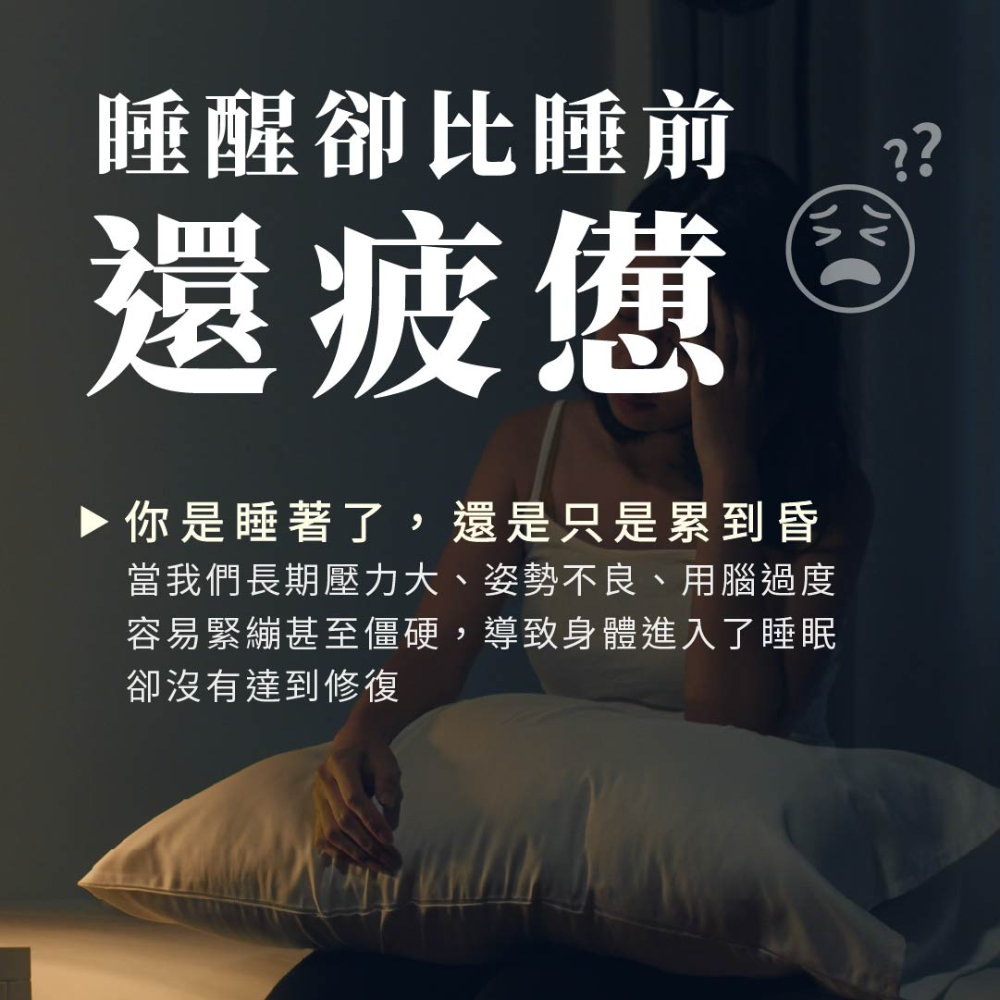
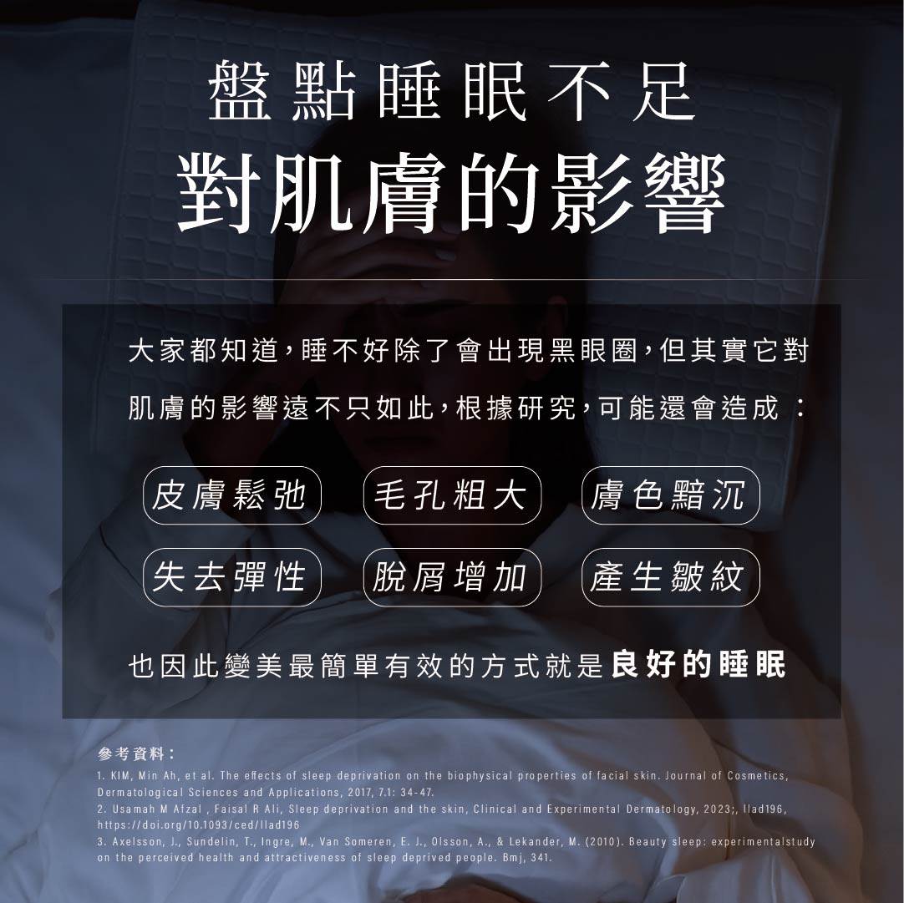
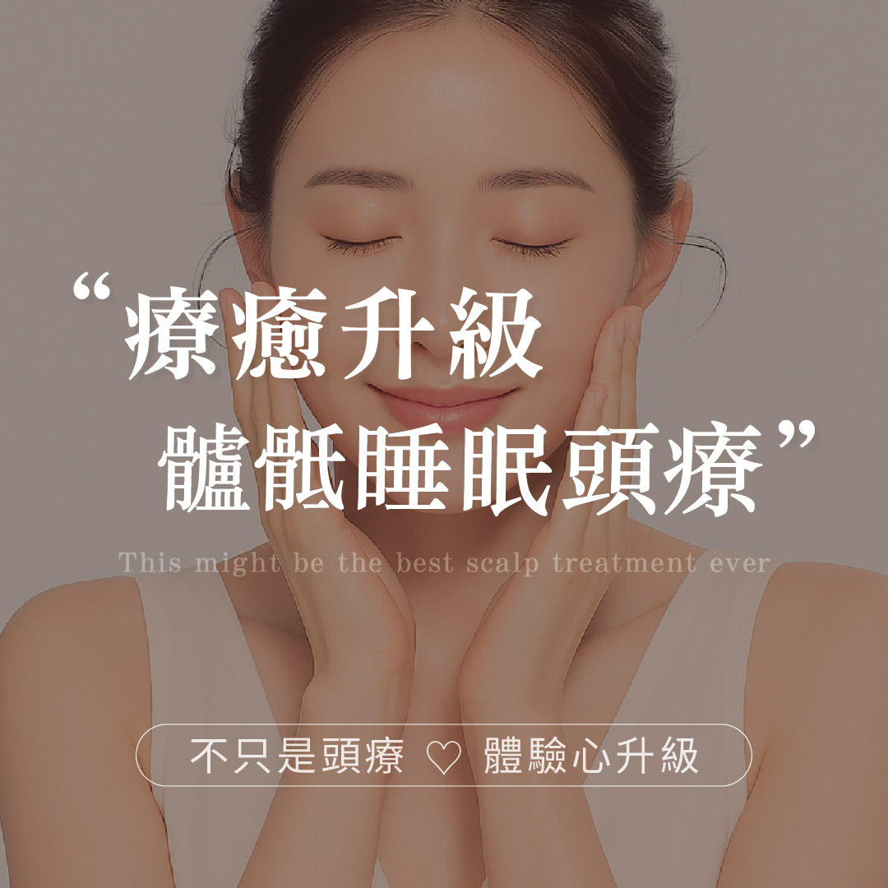
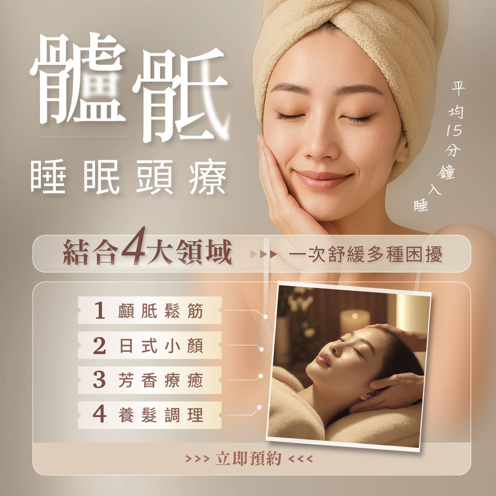
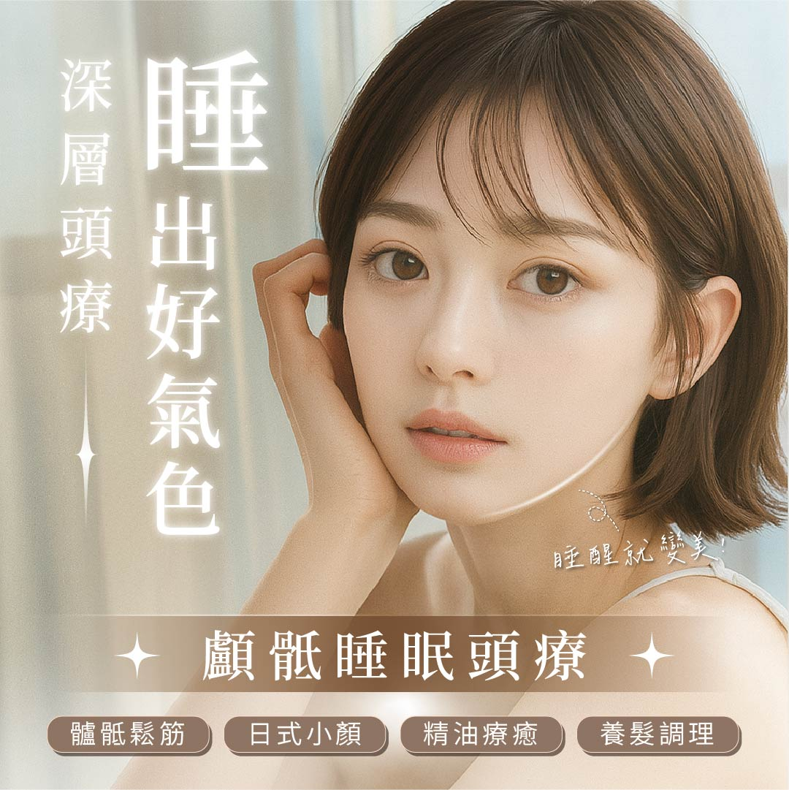
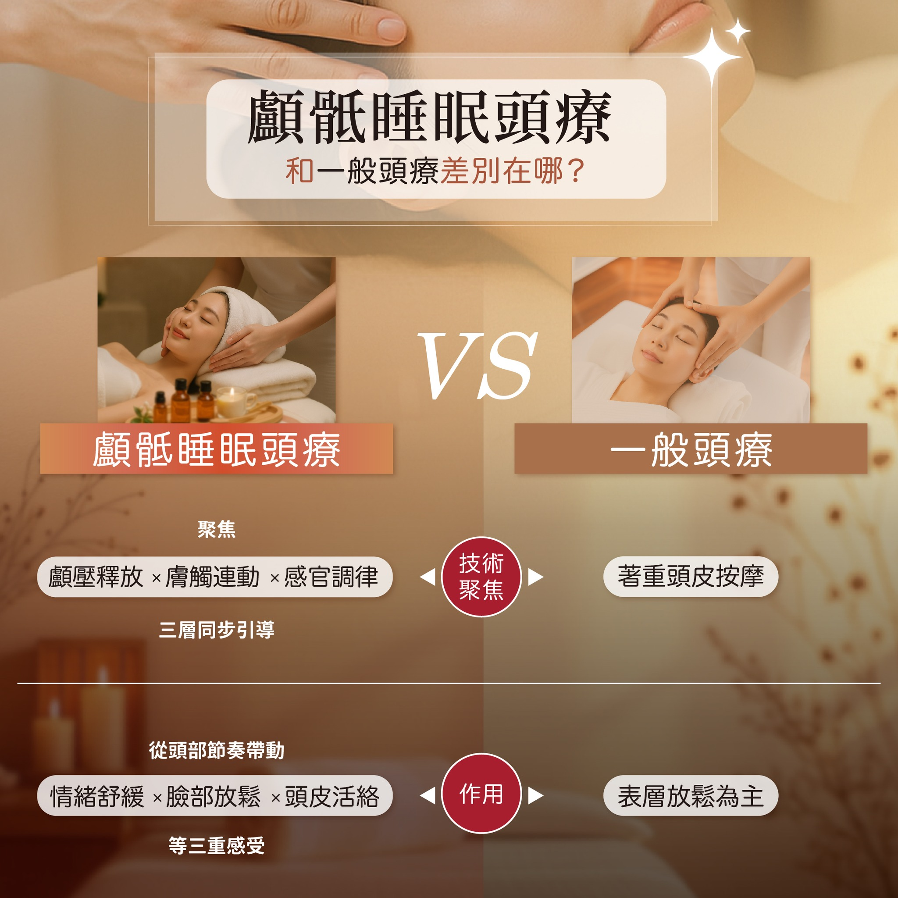
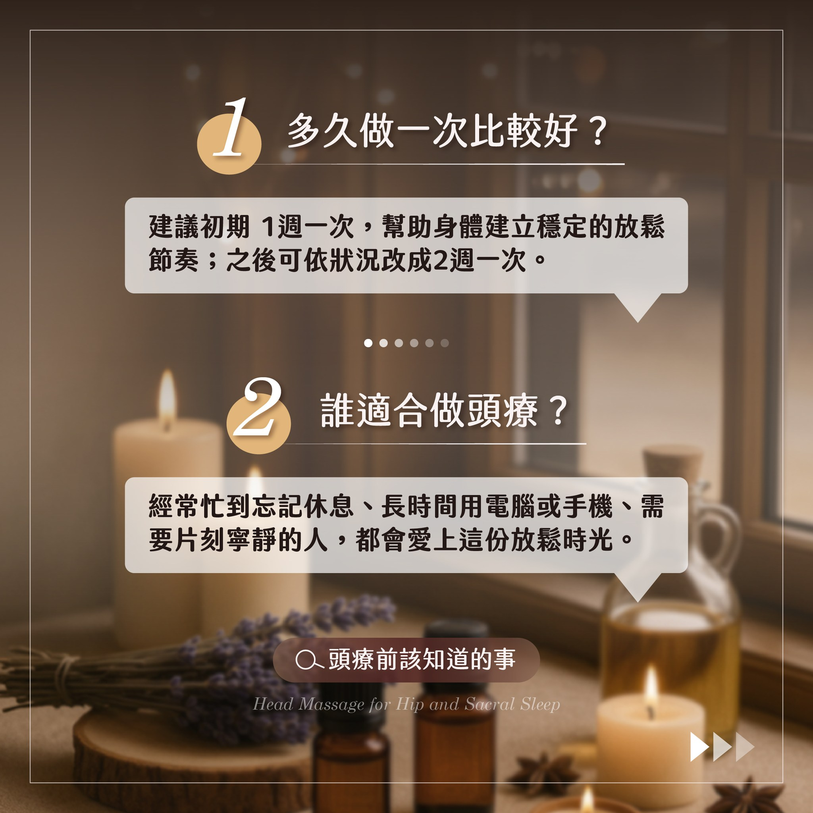
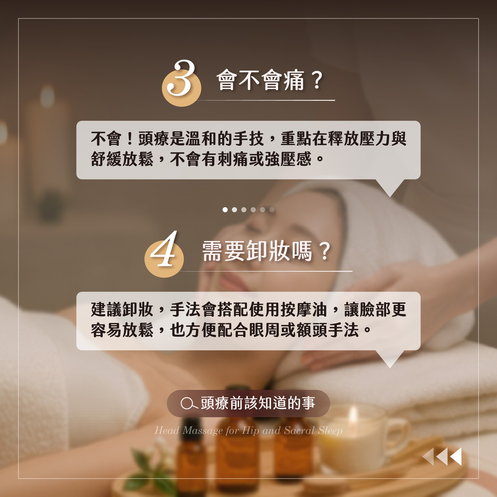

😴
睡眠品質不好
腦袋總是停不下來，翻來覆去好像有睡但起床還是昏沉。
你是睡著了，還是只是累到昏？
當我們長期壓力大、姿勢不良、用腦過度，容易緊繃甚至僵硬，
導致身體進入了睡眠卻沒有達到修復。
腦袋總是停不下來，翻來覆去好像有睡但起床還是昏沉。
壓力大到偏頭痛，一整天盯著螢幕，肩頸硬梆梆。
鏡子裡的黑眼圈和魚尾紋越來越明顯，氣色越來越差。
壓力型掉髮讓人焦慮，頭皮環境需要被好好調理。
每天滑手機、用電腦，眼睛很累、眼壓高。
每天的忙碌感讓人好窒息，經常忙到忘記休息。


根據研究，睡不好除了出現黑眼圈，還可能造成：皮膚鬆弛、毛孔粗大、膚色黯沉、失去彈性、脫屑增加、產生皺紋
變美最簡單有效的方式就是 良好的睡眠
不只是頭療 ♡ 體驗心升級
這不是一般的頭部放鬆，而是一套結合身體結構、頭部筋膜與頭皮養護的深層調理。從壓力源頭開始釋放，讓身體與神經系統真正回到穩定狀態。


以輕柔手法調整顱骨、薦椎與深層筋膜，釋放長期緊繃、改善頭脹失眠、自律神經失衡。
以日式淋巴排毒結合骨膜按壓，雕塑下顎線、消除水腫、提拉緊緻，單次有感。
選用天然精油，搭配精油嗅吸引導神經放鬆進入療癒狀態，安神助眠、平衡情緒。
深層放鬆毛囊，頭皮養護與按壓，改善頭皮環境，平衡油脂、強化毛囊、減少落髮。

告別翻來覆去，找回深度好眠，讓身體真正進入修復狀態。
減輕緊繃頭痛，釋放腦壓，讓大腦輕盈清晰。
深層放鬆毛囊，改善頭皮循環，預防壓力掉髮。
臉部筋膜釋放，調理循環，改善眼周細紋。
改善眼周循環，讓氣色自然亮起來，睡醒就變美。
從頭部節奏帶動全身放鬆，情緒舒緩、臉部放鬆、頭皮活絡。
從壓力源頭開始釋放，讓身體與神經系統真正回到穩定狀態
精準了解壓力來源與身體狀態
引導神經放鬆進入療癒狀態
開啟深層呼吸，打開循環與呼吸空間
精華液調理 × 刮板 × 徒手按壓，改善緊繃與氣結
刮板調理，釋放累積壓力，感受腦壓被釋放
改善頭皮環境，顱底穩定調整
完整收放身心狀態，客製化居家保養建議

電源・熱水・床或可平躺空間・枕頭・椅子・棉被
需預付訂金 $400（雙人 $600），定金支付後即為保留時段
體驗後留下好評回饋，即可延長 10 分鐘 + 持續享有體驗價
本服務僅限女性預約


建議初期 1 週一次，幫助身體建立穩定的放鬆節奏；之後可依狀況改成 2 週一次。
經常忙到忘記休息、長時間用電腦或手機、需要片刻寧靜的人，都會愛上這份放鬆時光。
不會！頭療是溫和的手技，重點在釋放壓力與舒緩放鬆，不會有刺痛或強壓感。
建議卸妝，手法會搭配使用按摩油，讓臉部更容易放鬆，也方便配合眼周或額頭手法。
療程大概一小時左右，包含諮詢、精油嗅吸、全程手法與收操。
需準備電源、熱水、床或可平躺空間、枕頭、椅子與棉被即可。我們會攜帶所有療程器材。
加入官方 LINE 後告知日期、時段即可。工作室體驗需預付訂金 $400（雙人 $600），到府服務目前免訂金。
給自己一個小時的「斷電時間」
讓自己好好放鬆，在家就能享受頭療，或到安靜工作室深層放鬆
雨瑤美業 ｜ 預約制・請先加 LINE 洽詢
私訊「我要預約」即可開始